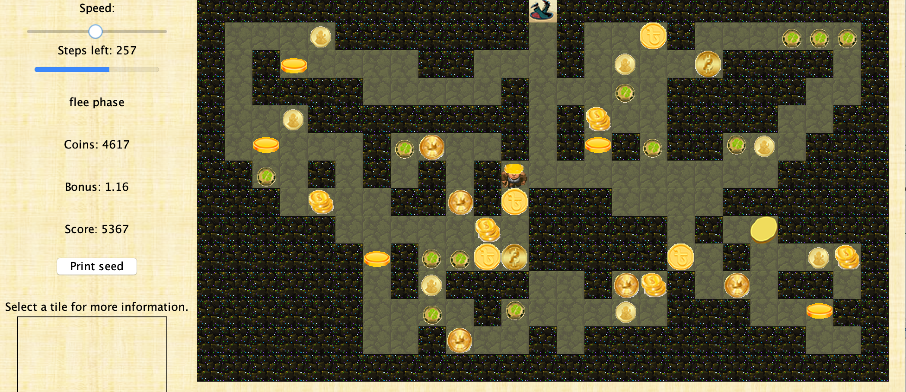

Zoltan_Csaki

Software Engineer
Ithaca NY
(607)280-0335
Skills
Computer Programming: profficient in Python and Java
Teamwork: Experienced with larger engineering projects and working with teams
Problem Solving: Enjoys challenges and thinking outside the box
Website and Database programming: Experienced with SQL and familiar with HTML
Enthusiasm: Brings energy, motivation and excitment to the work enviroment
Education
Cornell Universty College of Engineering Class of 2022
2018 - Now
Lansing High School
2014 - 2018
Experience

 Member of the Electrical and computer engineering team on Cornell Cup Robotics. We have been developing a child friendly robotics platform using Raspberry Pis and using the platform to make fun interactive and fairly complex applications. We developed a modular connections to the bot with universal connections to motors and servos. Application projects include lasertag between people and a real life/video game fusion lasertag game between robots (see project portfolio).
Member of the Electrical and computer engineering team on Cornell Cup Robotics. We have been developing a child friendly robotics platform using Raspberry Pis and using the platform to make fun interactive and fairly complex applications. We developed a modular connections to the bot with universal connections to motors and servos. Application projects include lasertag between people and a real life/video game fusion lasertag game between robots (see project portfolio).
 Team lead Junior year managing a team of 15 people and head programmer both junior and senior year. Qualified for state competition in both 2017 and 2018. I was in charge of software programmed in java, and I also worked with sensor and mechanical design.
Team lead Junior year managing a team of 15 people and head programmer both junior and senior year. Qualified for state competition in both 2017 and 2018. I was in charge of software programmed in java, and I also worked with sensor and mechanical design.
 As an engineering Project Lead The Way graduate, senior year we were given the freedom to pitch and design a product. My team worked with robotics and thought of Dustin, an autonomous miniature vaccume for desks, shelves and small areas.
As an engineering Project Lead The Way graduate, senior year we were given the freedom to pitch and design a product. My team worked with robotics and thought of Dustin, an autonomous miniature vaccume for desks, shelves and small areas.
 Hired to be a consultant for CS 1110 Introduction to Computing Using Python. This job includes helping students during Lab section, running one on one consulting hours and grading students projects/exams.
Hired to be a consultant for CS 1110 Introduction to Computing Using Python. This job includes helping students during Lab section, running one on one consulting hours and grading students projects/exams.
Project Portfolio
Kionix Search
 I fixed the search of the Kionix website because documents were not comping up when relevent searches were made. I learned SQL and then worked through MSQL to update and organize thousands of entries in the Kionix database. The main goal was to have a customer be able to search any sensor and have all the relevent documents fron the server show up in an organized fashion (For example if you search 'KX126'). I worked with a website development company to implement the changes in the search and add in filters that sorted documents.
I fixed the search of the Kionix website because documents were not comping up when relevent searches were made. I learned SQL and then worked through MSQL to update and organize thousands of entries in the Kionix database. The main goal was to have a customer be able to search any sensor and have all the relevent documents fron the server show up in an organized fashion (For example if you search 'KX126'). I worked with a website development company to implement the changes in the search and add in filters that sorted documents.
Organization and Accsessability of Website Files
I worked in the database to link all of the evaluation circuit boards to all the corresponding sensors and display multiple at once. I also helped create a table that organized documentation and linked the documents to corresponding sensors. 
HTML webpage updates
I learned HTML and then updated or remade the webpages under the Applications' tab of the Kionix website
Autonomous Program
I wrote an autonomous program that won an award at a 24 team Robotics tournament. The goal was to knock your opponents colored ball off, read and decipher a picture mounted on the wall using computer vision and then place a block in the slot that corresponds to the image you recognized. I was able to do all of this and recieved an award for my use of Gyroscopic and encoder sensor data to orient the robot to the correct slot. I developed an algorithm that used the law of cosines to correct for error in how the robot drove off of the wobbly platform it started on, and error general error in the ending location of the robot. The high scoring potential of my program helped my team and our alliance win the entire tournament.
Our robot Starts here
^My teams robot is 7743^
I also played a strong leadership role on the team and worked with others to create a claw that picked up a humanoid object and 'rescued' it by lifting it up and extending it over the wall
I was elected president of my robotics team this year of high school. My job was to run the team, manage meetings, assign people tasks and ensure that work got done. Our robotics team had the bests results and highest amount of paricipation in its history that year. We made it to the state tournament.
On top of being president and overseeing the design and construction of the robot, I also took on much of the programming of the robot, working with someone else to write the autonomous and driver contolled programs in Java.

The goal was to have indepedent user controlled bots that can play against eachother in a game of lasertag. The user controls the bots using a Unity created video game, which controls the bots both in the game and in real life. The game also gets feedback from the overhead cameras to determine the bots position in the virtual game. I worked on the electrical engineering and sensor side of the game helping to integrate the lasertag part of the game. I worked to dsign and create the circuitry for minibots that could should infrared beams and get shot, while also keeping track of their lives with LEDs
Me and a teamate developed a game of lasertag from scratch. We worked to explore the teams minibot platform (explained in previous tab) and expand on it by integrating infrared sensors/emitters sound mechanisms and creating a project that would be a fun, educational and do-able for young adults.

I worked to design the circuitry using rasberry pi and soldered together protoboards with raspberry pi's to create a fully functioning lasertag system, including a trigger, infrared emitter, an array of detectors on the gun and in the vest, audio feedback, a reset button and LED lights indicating how many lives the player has.

I also helped work with the software of the game. I wrote code that interacted with the hardware at a pretty low level getting voltage inputs from sensory information and outputting specific frequencies and voltages to make the system run. We did this using object oriented code that used multi-threading in order to run the many different functions of the game at one time.
I worked on writing software for a demo that Kionix now takes to many sensor expos to promote their project. We put a sensor on slot cars and took the data from the Kionix accelerometer (measures acceleration) and magnetomenter (measure magnetic flux) processed the data and displayed it on a user interface in order to create many real world applications of the Kionix sensors to show how functional and versatile they are. Some of the algorithms I worked on include but are not limited to the terrain detection algorithm and driver profiling.
Terrain Detection: The idea was to have the car drive over some sort of 'rough' terrain to show the Kionix sensor can be used for vibration analysis in the high frequency domain. I used paper clips to emulate rough terrain. At first I thought this analysis would be simple, but because the sensor is so sensitive to changes in acceleration It was very difficult to see distinct changes in the acceleration patterns that could be hard coded without giving false positives. So I came up with al algorithm that fed in the most recent .5 seconds of data, and then calculated the average. After this the algorithm calculated how many distinct positive and negative peaks there were in all three axis of acceleration. I compared the data of how many peaks there were in the three axis just driving the car around and while driving it over paper clips to then deterime thresholds for number of peaks there should be to conider the terrain 'rough'. After refinement the algorithm had what seemed to be a 100% succsess rate.
Driver Profile: The idea of this algoritm is to rate a driver based on how 'good' or safe the driver of the slot car is. We did this by taking in to account the cars peak accelerations, max g forces and average speed throughout a lap in order to assign the driver a profile score from 1 to 100 on how good of a driver they were. This could be used by insurance companies to help lower the rate for safe drivers or trucking/transportation companies to ensure their employees are driving safely.
 My team worked on a hosuehold security device to monitor certain areas of your hosue with a very simple compact and low cost device.
We built an arduino project that used motion sensing data from a sensor to sent instant text alerts to your phone when activity is detected.
The device also had the option of a blaring alarm to scare away small children.
This idea was pitched as a child safety tool for medicine cabinets and gun cabinets but has a wide array of possible usage ranging from ensuring no one steals your money or the kids aren't taking chocolate and cookies too often.
My team worked on a hosuehold security device to monitor certain areas of your hosue with a very simple compact and low cost device.
We built an arduino project that used motion sensing data from a sensor to sent instant text alerts to your phone when activity is detected.
The device also had the option of a blaring alarm to scare away small children.
This idea was pitched as a child safety tool for medicine cabinets and gun cabinets but has a wide array of possible usage ranging from ensuring no one steals your money or the kids aren't taking chocolate and cookies too often.
My team created and pitched a custom paint mixing machine within 24 hours. Our idea was to have a graphic user interface you can use on your computer and select and color on the rainbow spectrum. Then based on the user input the program calculates the amount of Red, Green and Blue paint to mix in order to create the desired shade of paint.
In my senior year high school engineering class we came up with the product idea called 'Dustin', which would be a small scale autonomous robot that could navigate shelves, desks or any surface without falling off and bumping into objects, while also vaccuming/ cleaning the area.

Our project resulted in a final concept prototype. We worked extensivly with sensory information such as LIDAR, infrared, accelerometer, gyroscopes and physical product design to create a small scale manuevarable autonomous dust wiping bot.
During senior year in my engineering class, me and two others decided to work on a self-driving car project, and our goal was to build a car that could autonomously navigate the school.
We managed to build a robot using Arduinos platform, motors with motor control and an ultrasonic sensor with infrared sensors. The program told the robot to navigate randomly unless it sensed surroundings. It had infrared sensors at the bottom to ensure it did not drive off stairs, but backed up and truned. It also had a scannning ultrasonic sensor that scanned to check how far the walls were around the robot so it could decide which way to drive.

The final project for 2110 was to work off of a game platform that was given and implement a maze solving algorithm. The goal was to have your character pick up coins worth as many points as possible and then also escape the maze before time ran out. My group developed an alogiorhtm to always pick up the coin worth the most points per unit of movment and then escape when the shortest path to the exit was equal to the number of steps the character had.  We got a 97% which means our algorithms were in the top 30% of the most efficient solutions to the assignment!
In the intro computer science class we had to code a game of space invaders from scratch. Here is my code on github!
 Some of the software architecture was provided but I made the space invaders game and also added extensions to the game such as mutiple lives, multiple waves and even powerups!
Some of the software architecture was provided but I made the space invaders game and also added extensions to the game such as mutiple lives, multiple waves and even powerups!
I figured out how to make a website and coded it myself!